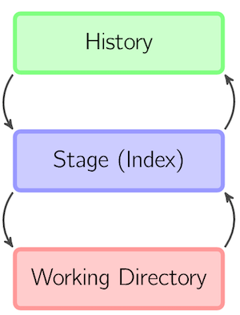
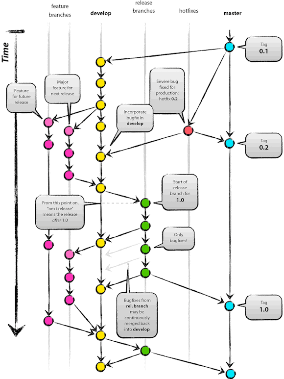
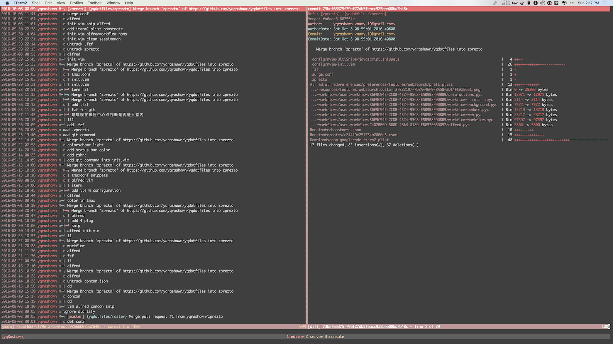
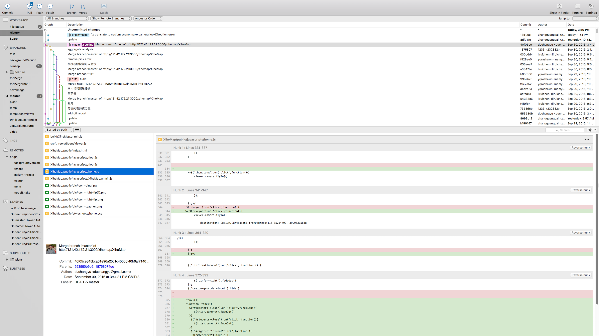

Git 指南
Git 是什么
Git是一个版本管理的工具或系统. 需要注意的是, 它是一个本地程序, 是一个本地数据库, 它的核心功能与网络无关, 可以简单的把它看成Windos系统的资源管理器. 而GitHub, GitLab等网站, 可以理解为在远程有一台电脑, 它上面也安装了Git, 它的根本作用就是把你的项目的Git数据库同步到远程的电脑上, 等你换一台电脑再次工作时, 再同步回来.
Git 简史
Git诞生于2005年. 基于对Linux内核进行维护的需求, Linux的作者开发出了Git.了解更多.
Git 原理
简单介绍一下Git的原理, 便于后面理解.
可以简单认为Git是一个基于数据库的文件系统, 或者直接理解为一个小巧而快速的数据库. 文件从创建到逐步完善过程中产生的每个版本的文件, 都以快照的形式保存在数据库. 这个数据库位于每个项目的 .git/objects文件夹中.
这里的快照可以理解为, 每次修改都将整个文件保存, 保存的文件称为blob, 比原始的文件要小很多. 根据一些规则, Git会对一些旧的文件进行打包(pack), pack时会进行文件的比较和压缩生成pack文件和其索引, 位于.git/objects/pack文件夹中.
了解更多.
配置Git
初次使用Git需要配置的基本信息是name跟email两个字段, 因为我们需要让Git知道是谁提交了修改. 可以使用git config命令修改.
#初次设置 git config --global user.name "yqrashawn" git config --global user.email "namy.19@gmail.com" #再次查看 git config --global user.name yqrashawn git config --global user.email namy.19@gmail.com
也可以在$HOME处的.gitconfig文件处设置, 该文件是Git的全局配置文件, 每个项目下的.git/config文件中可以用相同的语法在本项目范围内覆盖该设置, 全局设置文件内容如下.
[user] name = yqrashawn email = namy.19@gmail.com 该文件是Git的global配置, 每个项目中也可以单独配置, 配置文件在projectDir/.git/config.
开始使用Git
最开始使用Git有两种情况, git init和git clone. 这之前需要了解一下Git的branch(分支)的概念.
Git 分支(branch)
Git的分支比较容易理解, 当两个人修改同一个文件时, 可能会出现冲突, 正常的做法是, 两个人把该文件各复制一份到自己电脑上修改, 改好以后两个人坐一起讨论一下, 把修改好的两个文件合起来. 这就是一个简单的分支概念,
| * 6050cc2 Merge branch 'zprezto' of A2 |\ | | | * c73a998 add status bar color C22 | | | * 0005228 add zshrc C21 | | * | c328a5f add git command into init.vim C11 |/ | * a772860 Merge branch 'zprezto' of A1 |
如上面的例子, 两个分支从A1点这个版本分出, 左边分支更改了一次文件(C11), 右边的分支更改了两次(C21, C22), 在两个人更改后在A2出又合并为同一分支.
git branch列出所有分支列表和当前所在分支, -a列表包含远程分支.
git checkout -b 分支名字能够新建分支.
git branch -d 分支名字能够删除分支, 但删除前Git会检查该分支是否完全合并到已存在的分支中(fully merged). 使用-D不会进行此项检查.
git branch --no-merge查看尚未被合并的分支.
HEAD
Git中的HEAD指针指向当前工作区域所在的分支.
git init
git init命令很简单, 在你需要从0开始新建一个项目的时候使用, 在你想要作为项目根目录的文件夹下使用该命令, 会初始化(生成).git文件夹, 也就是初始化数据库. 这时你在master分支上, 你的项目也已经初始化完毕.
git status
git status是Git中常用的命令, 可以项目文件的状态, 使用git status —short可以省去一些不必要的提示. 它返回的信息标识除了不同状态的文件.
A "Git \346\214\207\345\215\227.md" 新增, 已暂存 D haha 从记录中删除(与上一次Commit相比) AM 123 暂存后修改 M "Git.md" 修改且未暂存(与上一次Commit相比) M "Git2.md" 修改且已暂存(与上一次Commit相比) MM "Git3.md" 修改暂存后再修改(与上一次Commit相比) UU "Git4.md" 冲突 ?? hhhhh 未记录且未忽略 还有许多其他的状态 如 AD, MD等.
状态符占两位, 左边一位表示已暂存的状态, 右边一位表示工作区的状态(暂存区, 工作区后面讲).
工作区, 暂存区, 已提交区
在Git管理下的文件有三种状态, 已修改未暂存, 已暂存未提交, 已提交. 这里的暂存涉及git暂存区的问题. Git中的环境可以简单根据这三种状态分为工作区(Working Directory), 暂存区(Stage/Index)和已提交区(History), 类似于面前正在修改的笔记本(工作区), 放手边随时准备使用的笔记本(暂存区)和记完一本归档的笔记本(已提交区).
工作区的内容提交到暂存区使用git add命令, 暂存区提交到已提交区使用git commit命令.

git add
git add较为常用, 平时可以使用git add —patch命令来交互的将修改添加到暂存区.
git commit
git commit也较为常用, 可以使用git commit -m再提交时直接填写提交信息(commit message).
更方便的方法是git commit —verbose —all, 这里的—all指提交所有暂存区的内容, —verbose则可以调用git config中的编辑器显示提交的内容, 并输入提交信息(该选项与—all一同使用会显示所有要提交的改动, 会在有大文件改动时运行缓慢).
工作中如果保证自己提交的信息不需要二次确认时, 可直接使用git commit —all -m来提交.
可以使用git commit --amend --reuse-message HEAD —all来将改动不大的修改合并到上一次commit中. 去掉--reuse-message可以重新写commit message.
git rm
用于移除对文件的管理(untrack), 一般使用git rm —cache ./path/to/file来移除对文件的跟踪, —cache的作用是解除跟踪但不删除文件. 解除跟踪的文件在git status中的状态为??.
.gitignore
在初始化项目后, 可以在项目根目录新建.gitignore文件, 在文件中添加的文件(夹)会被Git排除.
git reset
该命令较为少用, 其作用与git add相反, 把已经放入暂存区的文件移到工作区(unstage). git reset path/to/file用于unstage单个文件, git reset用于把所有暂存区的改动移回工作区.
git checkout
git checkout 管理工作区
该命令多用于改变分支, 其实git checkout的作用是将暂存区的文件覆盖到工作目录, 两种使用方法与git reset相同. 另外, git checkout HEAD path/to/file可以将某个文件回复到上次commit的状态, 即抛弃本地改变(Discard local changes).
可以方便的使用git checkout —patch来交互(二次确认)地抛弃本地修改.
当有冲突产生时, 可以使用git checkout --ours —和git checkout --theirs —来直接选择应用某一版本, 抛弃另一版本. 该方法需谨慎使用, 使用频率不高.
假设现在位于master分支, 要合并hotfix分支 git merge master 出现了冲突, 要选择hotfix分支, 抛弃master分支的修改, 则使用 git checkout --theirs --
git checkout 切换分支
较常用的是git checkout 分支名称来切换分支, 其余选项不太常用.
git merge
用来合并两个分支, git merge 分支名称可以合并当前HEAD分支和分支名称给出的分支.
冲突
Git在正常使用的情况下基本是安全的, 但不是绝对的, Git自动合并成功并不代表合并后的代码不会出问题, Git能够检测同一文件的同一区域的冲突. 冲突可以简单分为三种.
逻辑冲突
部分冲突Git是无法识别的, 比如A修改了文件名或文件的函数名, B从另一个文件调用该函数, 显然会报错(Git能够检测到文件名的改动). 这些Bug都是需要通过测试发现的.
内容冲突
不同用户修改了同一文件同一区域, Git可以检测出. 在检测出该类冲突后, 冲突文件的冲突位置会被Git更改为下面的样子.
<<<<<<< HEAD 我改的代码 ======= 别人改的代码 >>>>>>> bd00d06d0ceb39365f6b3cadd8bfbbc639ce23d6
不论我们用什么方法或工具解决冲突, 最后代码要改成这个样子
我改的代码
或者这个样子
别人改的代码
不然正常代码里多出来<<<<<<这个东西, 肯定报错.
解决冲突的工具所做的只是把不同部分代码高亮为不同的颜色, 并提供一些选择某一代码块的按钮或方法. 工具在后面讲.
树冲突
两个用户同时改变了文件树, Git可以检测出, 比如两人同时把文件a.js改为b.js和c.js, Git是可以检测出的.
远程仓库
前面差不多总结了git在本地使用的方法, 下面讲远程仓库的使用. Git与远程仓库传输数据时有四种协议, 常用的为HTTP协议和SSH协议.
http://111.111.111.111:3000/haha/git-tutorial.git为HTTP协议.
git@111.111.111.111:haha/git-tutorial.git为SSH协议.
如果是公开的项目, 使用HTTP协议和SSH协议拉取时都不会有认证问题, 但推送时会出现认证授权问题, HTTP认证会要求用户输入用户名和密码, 而SSH认证时会访问用户的私钥与用户之前上传的公钥匹配. 可以说HTTP协议的适用范围最广, GitHub也推荐用户使用HTTP协议.
如果使用HTTP协议时被要求每次推送都输入密码, Windows用户可以通过配置Git的凭证管理工具保存凭证, 只需要在命令行输入git config --global credential.helper wincred即可调用Windos的凭证管理工具来管理Git的认证凭证. 在macOS下使用git config --global credential.helper osxkeychain来调用macOS的keychain管理凭证.
另外, GitHub的GUI客户端以及许多第三方客户端都会安装凭证管理工具或自动链接系统凭证管理工具.
git remote
git remote git remote add 远程仓库名 远程仓库URL 添加新的远程仓库 git remote rename 要修改的远程仓库名 新远程仓库名 重命名远程仓库 git remove 远程仓库名 删除远程仓库
其他命令
其他的命令都不太常用常用的只有一两条.
git push
git push 远程仓库名 远程分支名 推送本地已经提交的代码到指定远程分支
git fetch
git fetch 获取对应远程仓库的数据且不合并 git fetch --all 获取所有远程仓库的数据且不合并
git pull
git pull 远程仓库名 远程分支名 获取对应远程分支数据并合并 git pull 实际上就是 git fetch加git merge
如何高效使用Git
常用的工具自然要高效使用. Git的高效使用涉及config, hooks, alias, 分支管理模型, 第三方工具等.
git config
前面提到了基础的git config, 但要高效使用Git, 需要增加更多的配置.
在Git的使用过程中不难注意到, 当我们在 origin/master, 分支下使用git push, git pull命令时, 不需要写远程仓库名和分支名也可正确的push和pull. 但在其他分支下时, 就会看到这样的提示
There is no tracking information for the current branch.
Please specify which branch you want to merge with.
See git-pull(1) for details.
git pull <remote> <branch>
If you wish to set tracking information for this branch you can do so with:
git branch --set-upstream-to=origin/<branch> bimsop 在我们clone某个项目时, Git会自动初始化master分支并track远端的origin/master分支, 这时使用push和pull命令时就会与默认远端分支交换数据.
所以我们只需要运行提示最下面给出的命令即可.
比如, 上面的情况需要输入命令git branch —set-upstream-to=origin/bimsop bimsop, 这样每次执行命令时可以快很多.
这时如果查看项目根目录下的.git/config文件, 会发现多出了下面三行.
[branch "bimsop"] remote = origin merge = refs/heads/bimsop
这就表明本地的bimsop分支track的是origin远程仓库的bimsop分支.
hooks
由于Git特性, 我们可能会希望在push代码前或pull代码后自动化的执行某些脚本或程序, Git提供的hooks可以方便做到这点.
查看项目目录.git/hooks目录下可以看到, 很多.sample文件, 其使用方法也很简单, 这里拿post-merge举例. 假设项目的代码需要在每次pull或merge以后编译一次来更新源码. 可以新建一个名为post-merge的文件, 内容为:
#!/bin/sh #编译代码的指令 webpack #语法为 shell script
这样就会在每次pull和merge后重新编译一次代码. 需要注意的是, 需要把该文件权限改为可执行文件. Windos下可以直接写一个bat脚本然后在post-merge文件中执行bat脚本.
其他hooks设置都比较类似, 还可以设置每次commit的提交信息, 比如有的时间管理程序就会记录用户编辑每个文件的时间然后在commit-msg使用shell script把用户的工作时间记录在提交信息中.
alias
alias意为别名, 类似于Windos中的快捷方式. 比如设置git的别名为g, 那在命令行中输入git push时, 可以简写为g push.
Git提供了别名功能, 运行git config --global alias.co checkout后, 就可以用git co来代替git checkout.
另一种使用别名的方式是在使用的shell(理解为命令行工具)中设置别名.
例如, 我使用的是Zsh, 可以直接在Zsh的配置文件中设置别名, 也可以使用Zsh插件prezto,里面的Git module. 提供了比较方便和较为通用的别名. 也可以自己做一些修改. 下面列出了一些比较常用的.
alias gc='git commit --all -m'
alias gca='git commit --all'
alias gcaa='git commit --verbose --all'
alias gcm='git commit --message'
alias gco='git checkout'
alias gia='git add'
alias giA='git add --patch'
alias gp='git push'
alias gpp='git pull origin "$(git-branch-current 2> /dev/null)" && git push origin "$(git-branch-current 2> /dev/null)"'
alias gppp='git pull && git push'
alias gf='git fetch'
alias gfc='git clone'
alias gfm='git pull'
alias gfr='git pull --rebase'
alias gws='git status --ignore-submodules=${_git_status_ignore_submodules} --short'
alias gs='git stash'
alias gsa='git stash apply' 点击查看全部.
Git flow(分支管理模型)
Git flow是一套比较成熟的分支管理模型, 其有相应的命令行工具, 也有很多GUI工具支持. Git flow的原理很简单, 就是在不同的分支做不同的事情.
一个项目, 在master分支发布重大版本, Develop为开发分支, 所有开发以Develop分支为基准. 配有三种临时性分支: feature分支, fixbug分支, release分支.
feature分支. 项目增加新功能时, 从Develop新建feature分支开发新功能, 完成后合并回Develop分支. 这样其他人开发其他功能或者修理bug时不会因未开发完成的push而出错.
fixbug分支. 发现bug后需要修改代码, 从发现bug的分支新建出fixbug分支修复bug, 完成后合并回去.
release分支, 完成一个版本后, 在发布前新建release分支进行测试, 测试完成后发布.

Git flow 命令行工具
该工具可以方便的实现Git flow模型.
git flow init 在该项目初始化Git flow git flow feature start feature分支名 从哪个分支创建 新建feature分支并checkout git flow feature finish feature分支名 删除feature分支并merge git flow hotfix start hotfix分支名 从哪个分支创建 git flow hotfix finish hotfix分支名 git flow release start release分支名 从哪个分支创建 git flow release finish release分支名 也可以设置别名方便使用 alias gff='git flow feature alias gffs='git flow feature start alias gfff='git flow feature finish alias gffp='git flow feature publish alias gfft='git flow feature track alias gffd='git flow feature diff alias gffr='git flow feature rebase alias gffc='git flow feature checkout alias gffd='git flow feature delete alias gfb='git flow bugfix alias gfbs='git flow bugfix start alias gfbf='git flow bugfix finish alias gfbp='git flow bugfix publish alias gfbt='git flow bugfix track alias gfbd='git flow bugfix diff alias gfbr='git flow bugfix rebase alias gfbc='git flow bugfix pull alias gfbd='git flow bugfix delete
第三方工具
第三方工具分为GUI界面和CLI界面. 如果要提高效率, 建议只有在操作历史文件和分支时使用第三方工具可以提高效率, 在日常的操作中其实不太需要第三方工具.
tig
CLI工具tig的做的不错, 但是操作方式基于VIM, 不易使用. 长得这样子:

Tower
最开始用的就是这个, 所以感觉比较好用, 功能比较全面, 继承了Git flow, 功能很强大. 且刚推出了Windows的Beta版本. 但没有提供merge工具.界面:

SourceTree
功能略弱于Tower, 使用方便. 主要问题是第一次安装需要登录, 而国内不方便登录. 且预览大文件容易卡住.界面:

GitKraken
比较新的一个客户端, 做的很漂亮. 免费版功能强大, 自带merge工具, 预览大文件相当快. 唯一的缺点是没用习惯. 界面:

日常使用流程
最后总结一下日常使用时的流程.
假设我们要创建一个项目记录我今天吃了什么.
~/workspace ❯❯❯ mkdir food 新建food文件夹 ~/workspace ❯❯❯ cd food 进入'food ~/w/food ❯❯❯ git init 初始化 Initialized empty Git repository in /Users/Rashawn/workspace/food/.git/ ~/w/food ❯❯❯ echo '我吃了西瓜' > food.txt 新建'food.txt'并输入吃了西瓜 ~/w/food ❯❯❯ ls 文件夹多了food.txt food.txt ~/w/food ❯❯❯ git status --short 查看状态 ?? food.txt 有一个没有被跟踪的文件 ~/w/food ❯❯❯ head food.txt 显示文件内容 我吃了西瓜 ~/w/food ❯❯❯ git add food.txt 把文件加入暂存区 ~/w/food ❯❯❯ git commit -m '提交西瓜' 提交该次改动 [master (root-commit) e2b968e] 提交西瓜 1 file changed, 1 insertion(+) create mode 100644 food.txt ~/w/food ❯❯❯ git status On branch master nothing to commit, working tree clean ~/w/food ❯❯❯ echo '我吃了苹果' >> food.txt ~/w/food ❯❯❯ head food.txt 我吃了西瓜 我吃了苹果 ~/w/food ❯❯❯ git add food.txt ~/w/food ❯❯❯ git status --short M food.txt ~/w/food ❯❯❯ git commit -m '提交苹果' [master 162f6d2] 提交苹果 1 file changed, 1 insertion(+) ~/w/food ❯❯❯ git status On branch master nothing to commit, working tree clean
这时, 我们使用一下git flow.
~/w/food ❯❯❯ git flow init Which branch should be used for bringing forth production releases? - master Branch name for production releases: [master] Branch name for "next release" development: [develop] dev How to name your supporting branch prefixes? Feature branches? [feature/] Bugfix branches? [bugfix/] Release branches? [release/] Hotfix branches? [hotfix/] Support branches? [support/] Version tag prefix? [] version Hooks and filters directory? [/Users/Rashawn/workspace/food/.git/hooks]
可以看到这时git flow初始化时的选项, 它会询问你各个功能分支的名字和存放hooks的地址, 一般情况可以全部选择默认. 当初始化完成后, git flow会自动切换到develop分支.
现在我们要增加一个新的功能, 让文件能够记录我干了什么.
~/w/food ❯❯❯ git branch
* dev
master
~/w/food ❯❯❯ git flow feature start whatIveDone dev
Switched to a new branch 'feature/whatIveDone'
Summary of actions:
- A new branch 'feature/whatIveDone' was created, based on 'dev'
- You are now on branch 'feature/whatIveDone'
Now, start committing on your feature. When done, use:
git flow feature finish whatIveDone
~/w/food ❯❯❯ git branch
dev
* feature/whatIveDone
master
~/w/food ❯❯❯ echo '我在睡觉' > do.txt
~/w/food ❯❯❯ git status --short
?? do.txt
~/w/food ❯❯❯ git add do.txt
~/w/food ❯❯❯ git status --short
A do.txt
~/w/food ❯❯❯ git commit -m '提交睡觉'
[feature/whatIveDone c65087d] 提交睡觉
1 file changed, 1 insertion(+)
create mode 100644 do.txt
~/w/food ❯❯❯ git status --short
On branch feature/whatIveDone
nothing to commit, working tree clean 这时我们加在新的feature/whatIveDone分支新建了一个do.txt文件, 并记录了'我在睡觉'. 现在我们完成了这个功能, 要将其合并回develop分支.
~/w/food ❯❯❯ git flow feature finish Switched to branch 'dev' Updating 162f6d2..c65087d Fast-forward do.txt | 1 + 1 file changed, 1 insertion(+) create mode 100644 do.txt Deleted branch feature/whatIveDone (was c65087d). Summary of actions: - The feature branch 'feature/whatIveDone' was merged into 'dev' - Feature branch 'feature/whatIveDone' has been locally deleted - You are now on branch 'dev' ~/w/food ❯❯❯ git branch * dev master ~/w/food ❯❯❯ head do.txt 我在睡觉
这时我们已经回到了develop分支, 并且do.txt也已经合并进来了. git flow的其他功能的使用方法相同.
我们现在想将它放到远程仓库, 这样其他人也可以记录他们吃了啥, 干了啥. 首先我们新建一个远程仓库得到它的地址. http://111.111.111.111:3000/zhangyuxiao/food-do.git.
~/w/food ❯❯❯ git remote add origin http://111.111.111.111:3000/zhangyuxiao/food-do.git
在push之前我们需要把dev分支的内容合并到master分支.
~/w/food ❯❯❯ git branch * dev master ~/w/food ❯❯❯ git checkout master Switched to branch 'master' ~/w/food ❯❯❯ git merge dev Updating 162f6d2..c65087d Fast-forward do.txt | 1 + 1 file changed, 1 insertion(+) create mode 100644 do.txt ~/w/food ❯❯❯ git status On branch master nothing to commit, working tree clean
这时我们已经把dev分支开发的内容同步到了master了.
~/w/food ❯❯❯ git push -u origin master Counting objects: 9, done. Delta compression using up to 8 threads. Compressing objects: 100% (4/4), done. Writing objects: 100% (9/9), 757 bytes | 0 bytes/s, done. Total 9 (delta 0), reused 0 (delta 0) To http://111.111.111.111:3000/zhangyuxiao/food-do.git * [new branch] master -> master Branch master set up to track remote branch master from origin.
这里需要注意的是, 第一次推送时, 本地的master分支并不知道自己track的是远端的哪个分支, 所以需要使用-u或—set-upstream将本地的master和origin/master绑定.
现在另一个用户要更新自己的状态到该项目.
~/workspace ❯❯❯ git clone http://111.111.111.111:3000/zhangyuxiao/food-do.git Cloning into 'food-do'... remote: Counting objects: 9, done. remote: Compressing objects: 100% (4/4), done. remote: Total 9 (delta 0), reused 0 (delta 0) Unpacking objects: 100% (9/9), done. ~/w/food-do ❯❯❯ git branch * master ~/w/food-do ❯❯❯ echo '我也吃了苹果' >> food.txt ~/w/food-do ❯❯❯ head food.txt 我吃了西瓜 我吃了苹果 我也吃了苹果 ~/w/food-do ❯❯❯ git status --short M food.txt ~/w/food-do ❯❯❯ git add food.txt ~/w/food-do ❯❯❯ git status --short M food.txt ~/w/food-do ❯❯❯ git commit -m '提交也吃了苹果' [master c1fde84] 提交也吃了苹果 1 file changed, 1 insertion(+) ~/w/food-do ❯❯❯ git status On branch master Your branch is ahead of 'origin/master' by 1 commit. (use "git push" to publish your local commits) nothing to commit, working tree clean ~/w/food-do ❯❯❯ git push -u origin master Counting objects: 3, done. Delta compression using up to 8 threads. Compressing objects: 100% (3/3), done. Writing objects: 100% (3/3), 326 bytes | 0 bytes/s, done. Total 3 (delta 0), reused 0 (delta 0) To http://111.111.111.111:3000/zhangyuxiao/food-do.git c65087d..c1fde84 master -> master
上面的指令为另一个用户clone该项目后在food.txt文件中加入'我也吃了苹果', 加入暂存区并提交, push.